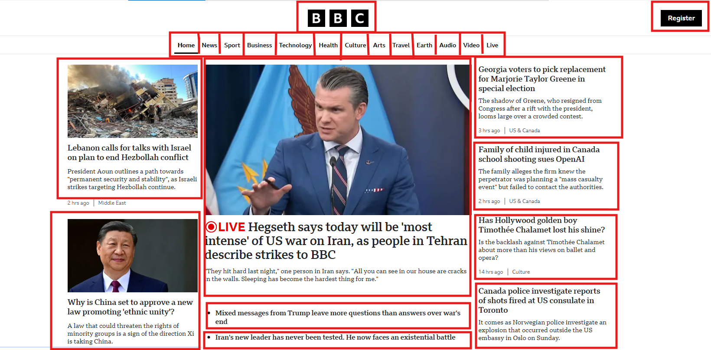

Semântica e Navegação em HTML
Atualmente o papel do HTML não é apenas “organizar visualmente” o documento, mas também descrever o significado do conteúdo por meio de tags semânticas, tornando-o mais claro tanto para programadores, quanto para browsers e outras engines que processam essa informação.
<h1>Título Principal</h1>
<p style="font-size: 32px; font-weight: bold;">Título Principal</p>
No exemplo, a tag h1 não serve apenas para deixar o texto grande. Ela significa: “Este é o título principal da página”. Visualmente, a segunda opção pode parecer igual, mas semanticamente está incorreta.
Com boa semântica temos:
- Acessibilidade - Leitores de tela entendem melhor a estrutura da página e melhoram a navegação.
- SEO (Google) - Motores de busca usam a semântica para entender qual é o assunto principal, o que é título e o que é seção.
- Organização e Manutenção - Código semântico é mais legível, organizado e fácil de manter.
A tag <header> representa o cabeçalho de um documento e
<footer> representa o rodapé.
<section> representa uma seção dentro de um documento e
geralmente contém
um título, sendo utilizada quando não existe um elemento semântico mais específico.
<nav> é utilizado quando precisamos representar um agrupamento
de links de
navegação. Normalmente esses links são estruturados utilizando
<ul>, <li> e <a>.
<main> especifica o conteúdo principal e de maior relevância da
página.
Links HTML
Os hiperlinks são uma das inovações mais interessantes que a Web oferece. Bem, eles são uma característica da Web desde o início, mas são o que torna a Web como ela é — eles nos permitem vincular nossos documentos a qualquer outro documento (ou outro recurso) que queremos. Também podemos vincular para partes específicas de documentos e podemos disponibilizar aplicativos em um endereço web simples (em contraste com aplicativos nativos, que devem ser instalados e tantas outras coisas). Qualquer conteúdo da web pode ser convertido em um link, para que, quando clicado (ou ativado de outra forma) fará com que o navegador vá para outro endereço (URL).

A página inicial da BBC, por exemplo, contém um grande número de links que apontam não apenas para várias notícias, mas também diferentes áreas do site (funcionalidade de navegação), páginas de login/registro (ferramentas do usuário) e muito mais.
Como fazer um link em HTML
No HTML, os links são definidos pela tag <a>. Dentro dessa tag
incluímos o atributo href (Hypertext Reference), que é o endereço de destino do link. Dentro do conteúdo
da tag <a>, incluímos então o texto ou elemento que servirá
como redirecionador, ou seja, que ao ser clicado, executará a função de redirecionar para o endereço
dentro do atributo href.
Dessa forma, a sintaxe básica do HTML link é:
<a href="url">Clique aqui</a>A tag <a> pode ser utilizada dentro ou fora dos demais elementos
(tags) do HTML, como no exemplo abaixo onde criamos um parágrafo, e dentro dele, apenas a palavra Google
contém um hiperlink para a página inicial do Google:
<p>Link para o site do
<a href="https://google.com">Google</a>
</p>Como resultado temos:
Link para o site do Google.
O atributo href
O atributo href é utilizado para especificar o endereço de destino do
link. Um link pode direcionar para:
- Um endereço completo, como
https://google.com, utilizados para páginas de outros domínios, ou seja, externas. - Um caminho relativo, como
/contato.html, que aponta para um arquivo dentro do mesmo site. - Um elemento interno, como
#secao-principal, que aponta para um elemento HTML existente na mesma página.
O atributo target
O atributo target é utilizado para especificar onde o link será
aberto. Os valores mais comuns são:
_self: O link será aberto na mesma aba._blank: O link será aberto em uma nova aba.
<a href="https://google.com" target="_blank">Link para o site do Google</a>
URLs e Caminhos em HTML
Na web, cada recurso possui um endereço chamado URL (Uniform Resource Locator). Uma URL indica onde um recurso está localizado, podendo apontar para páginas HTML, imagens, arquivos ou qualquer outro conteúdo disponível na internet.
Ao criar links ou carregar arquivos em um site, utilizamos esses endereços dentro
de atributos como href (em links) ou src (em imagens, scripts e outros
recursos).
<a href="https://www.google.com">Ir para o Google</a>
Nesse exemplo, o atributo href contém a URL que indica para onde o
navegador
deve ir quando o usuário clicar no link.
Estrutura de uma URL
Uma URL completa geralmente possui alguns componentes principais:
- Protocolo – define como o recurso será acessado (ex: http ou https)
- Domínio – o endereço do servidor que hospeda o site
- Caminho – indica a localização específica do recurso dentro do site
https://www.exemplo.com/paginas/sobre.html
Nesse exemplo:
- https é o protocolo
- www.exemplo.com é o domínio
- /paginas/sobre.html é o caminho para o arquivo dentro do site
URLs Absolutas
Uma URL absoluta contém o endereço completo do recurso, incluindo protocolo e domínio. Ela é usada principalmente quando queremos acessar um recurso externo ou um site diferente.
<a href="https://www.wikipedia.org">Acessar Wikipedia</a>
Nesse caso, o navegador sabe exatamente onde encontrar o recurso, pois o endereço completo foi especificado.
URLs Relativas
Uma URL relativa indica o caminho do recurso em relação ao arquivo atual. Ela é muito utilizada em projetos web, pois permite referenciar arquivos dentro do próprio site sem precisar repetir todo o endereço.
Exemplo de estrutura de projeto:
/site
index.html
/paginas
sobre.html
/imagens
logo.png
fundo.jpg
Se estivermos no arquivo index.html, podemos acessar a página
sobre.html com o seguinte link:
<a href="paginas/sobre.html">Página Sobre</a>
E podemos carregar uma imagem da pasta imagens assim:
<img src="imagens/logo.png" alt="Logo do site">
Por que usar caminhos relativos?
- Facilitam a organização do projeto
- Evita repetir o domínio em todos os links
- Permitem mover o site para outro domínio sem quebrar os links internos
- Tornam o código mais limpo e fácil de manter
Por esse motivo, em projetos web é comum utilizar URLs absolutas apenas para recursos externos e URLs relativas para recursos internos do próprio site.
Âncoras em HTML
Uma âncora permite criar um link que leva o usuário para uma posição específica dentro da mesma página. Isso é muito útil em páginas longas, como documentações, artigos ou páginas com sumário.
Para criar uma âncora, utilizamos o elemento <a> com o atributo
href apontando para um identificador (id) presente na página.
Exemplo de uso
Primeiro criamos um link que aponta para uma seção da página:
<a href="#contato">Ir para a seção de contato</a>
Depois criamos um elemento com o atributo id correspondente:
<h2 id="contato">Seção de Contato</h2>
<p>Aqui estão as informações de contato.</p>
Quando o usuário clicar no link, o navegador irá rolar a página automaticamente
até o elemento que possui o id indicado.
Outros Elementos Importantes
Listas de Itens
Listas HTML organizam conteúdos utilizando tags estruturais. A tag
<ul> cria listas não ordenadas e <ol>
cria listas ordenadas (com números ou letras). Cada item dentro dessas listas
é definido pela tag <li>.
Essas estruturas são muito utilizadas em menus de navegação, tutoriais e organização de informações.
Lista não ordenada:
<ul>
<li>Item 1</li>
<li>Item 2</li>
</ul>
Lista ordenada:
<ol>
<li>Primeiro passo</li>
<li>Segundo passo</li>
</ol>
Também é possível colocar uma lista dentro de outra, criando listas aninhadas.
Imagens
Podemos adicionar imagens em uma página utilizando o elemento <img>.
O atributo src indica o caminho da imagem e o atributo alt
define um texto alternativo que descreve a imagem.
O elemento <figure> é uma marcação semântica utilizada para
agrupar
uma imagem e sua legenda.
<figure>
<img src="elephant.jpg" alt="Um elefante na selva" />
<figcaption>Um elefante na selva</figcaption>
</figure>
Exercícios
Exercício 1 - Semântica: Qual elemento usar?
Para cada situação abaixo, indique qual elemento HTML semântico é mais adequado.
a) O topo do site com o nome da empresa e o logotipo.
b) Um conjunto de links para navegar entre as páginas do site.
c) O conteúdo principal da página, como um artigo ou notícia.
d) Uma área no final da página com direitos autorais e informações legais.
e) Um bloco de conteúdo que possui título e conteúdo próprio dentro da página.
Responda: Visualmente, a utilização desses elementos mudou algo na página? Por que é importante utilizá-los?
Exercício 2 - Pensando na Semântica
Explique por que usar <h1> para títulos é melhor do que apenas aumentar o tamanho da fonte com CSS. Dica: pense em: acessibilidade, SEO e estrutura do documento.
Exercício 3 - Header ou Section?
Um dos objetivos dos elementos semânticos é separar os conteúdos similares, de um mesmo objetivo, dentro de grupos. Fazemos isso, por exemplo, para agrupar logotipo, nome do site e menu principal que ficam no cabeçalho da página, usando o elemento <header>.
O elemento <section> também é utilizado para separar seções de conteúdo dentro da página. Explique por que não devemos usá-lo para agrupar elementos do cabeçalho e rodapé.
Exercício 4 - Verdadeiro ou False
Analise as afirmações e indique se não verdadeiras ou falsas:
<header> só pode aparecer uma vez na página.
<section> geralmente possui um título.
<nav> deve ser usado para qualquer conjunto de links.
<main> representa o conteúdo principal da página.
Exercício 5 - Listas
Crie uma página com o título "Linguagens de Programação" e adicione uma lista não ordenada com as linguagens de programação que você conhece. Em seguida, adicione uma lista ordenada com os passos para aprender programação.
Desafio: Faça um aninhamento de listas (uma lista dentro da outra). Exemplo:
- Item 1 da lista
- Item 2 da lista
- Item 3 da lista
- Subitem 1 do Item 3
- Subitem 2 do Item 3
- Item 4 da lista
Exercício 6 - Imagens
Crie uma página contendo duas imagens:
Uma imagem hospedada na web (fonte externa);
Uma imagem salva localmente em sua máquina.
Exercício 7 - Links
Crie uma página contendo um link para a página inicial da UNIP: "Clique aqui para abrir o site da UNIP". Somente a palavra UNIP deve conter o link.
Em outro link, direcione o usuário para a página do Curso de Ciência da Computação da UNIP. A página deve ser carregada em outra aba.
Desafio Insira uma imagem qualquer na página e a transforme em um link para um portal qualquer de tecnologia. Ao clicar na imagem, direcionar o usuário para o destino do link.
Exercício 8 - Menu de Navegação
Crie um menu simples utilizando lista.
Itens do menu:
- Início
- Sobre
- Serviços
- Contato
Cada item deve ser um link usando <a>.
Exercício 9 - Portal de uma empresa de tecnologia - Parte II
Iremos trabalhar no exercício básica da aula anterior. Use o código feito por você ou utilize o exemplo abaixo.
<!DOCTYPE html>
<html lang="pt-BR">
<head>
<meta charset="UTF-8">
<title>TechFuture Soluções Digitais</title>
</head>
<body>
<!-- Cabeçalho -->
<h1>TechFuture Soluções Digitais</h1>
<p>Transformando ideias em <b>soluções digitais</b> modernas e eficientes.</p>
<!-- Seção Sobre Nós -->
<h2>Sobre Nós</h2>
<p>
A TechFuture atua no mercado de tecnologia desenvolvendo sistemas sob medida para empresas de todos os portes.
</p>
<p>
Nosso compromisso é com a <b>qualidade</b> e a <i>inovação</i>, entregando soluções que realmente fazem a diferença.
</p>
<!-- Seção Serviços -->
<h2>Serviços</h2>
<p>Desenvolvimento Web</p>
<p>Aplicativos Mobile</p>
<p>Consultoria em Tecnologia</p>
<!-- Seção Contato -->
<h2>Contato</h2>
<p>Email: contato@techfuture.com</p>
<p>Telefone: (11) 99999-9999</p>
<hr>
<!-- Rodapé -->
<p>© 2026 TechFuture Soluções Digitais. Todos os direitos reservados.</p>
</body>
</html>
Requisitos obrigatórios:
- Estruturação semântica:
- Usar a tag
<section>para separar seções de conteúdo - Usar a tag
<header>para separar elementos do cabeçalho - Usar a tag
<footer>para separar elementos do rodapé
- Usar a tag
- Substituir a lista de serviços, feitas com parágrafos, pelo elemento adequado de listas.
- Inserir uma imagem da empresa na seção “Sobre Nós” com a tag
<img>. - Criar um menu de navegação, usando lista não ordenada. O menu deve:
- Conter links do tipo âncora para cada uma das seções "Sobre Nós", "Serviços" e "Contato"
- Conter link externo para alguma página de tecnologia
- Usar a tag
<nav>
- Desafio: Ao final da página, adicione um link "Voltar ao topo" que, ao ser clica, volta ao início da página.